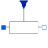

VariableResistorIdeal linear electrical resistor with variable resistance |

|
Information
This information is part of the Modelica Standard Library maintained by the Modelica Association.
The linear resistor connects the branch voltage v with the branch current i by
i*R = v
The Resistance R is given as input signal.
Attention!!!
It is recommended that the R signal should not cross the zero value. Otherwise depending on the surrounding circuit the probability of singularities is high.
Parameters (4)
| useHeatPort |
Value: false Type: Boolean Description: =true, if heatPort is enabled |
|---|---|
| T |
Value: T_ref Type: Temperature (K) Description: Fixed device temperature if useHeatPort = false |
| T_ref |
Value: 300.15 Type: Temperature (K) Description: Reference temperature |
| alpha |
Value: 0 Type: LinearTemperatureCoefficient (¹/K) Description: Temperature coefficient of resistance (R_actual = R*(1 + alpha*(T_heatPort - T_ref)) |
Connectors (4)
| p |
Type: PositivePin Description: Positive electrical pin |
|
|---|---|---|
| n |
Type: NegativePin Description: Negative electrical pin |
|
| heatPort |
Type: HeatPort_a Description: Conditional heat port |
|
| R |
Type: RealInput |
Used in Examples (5)
|
Modelica.Electrical.Analog.Examples Simple demo of a VariableResistor model |
|
|
Modelica.Electrical.Machines.Examples.SynchronousInductionMachines Test example: PermanentMagnetSynchronousInductionMachine acting as brake |
|
|
Modelica.Electrical.Machines.Examples.DCMachines Test example: DC with serial excitation starting with voltage ramp |
|
|
Modelica.Electrical.Machines.Examples.DCMachines Test example: DC with serial excitation starting with voltage ramp |
|
|
Modelica.Magnetic.FundamentalWave.Examples.BasicMachines Test example: PermanentMagnetSynchronousInductionMachine acting as brake |
Used in Components (1)
|
Modelica.Electrical.MultiPhase.Basic Ideal linear electrical resistors with variable resistance |